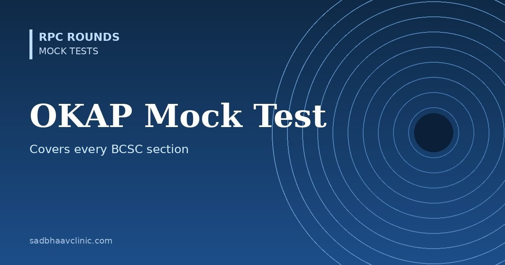

OKAP Mock Test: 50 Questions Across the 13 BCSC Sections
For: PG residents
Last updated: October 2026
A 50-question mock in the style of the OKAP (Ophthalmic Knowledge Assessment Program) and OKAP International, with about four questions from each of the 13 sections of the AAO Basic and Clinical Science Course. Useful for residents anywhere who want to check their breadth against the US curriculum.
- Format: four options, single best answer, 50 minutes (the real OKAP has 260 questions in 4.5 hours).
- Sections: general medicine, fundamentals, optics, pathology and tumours, neuro-ophthalmology, paediatrics and strabismus, oculoplastics, cornea, uveitis, glaucoma, lens and cataract, retina and refractive surgery.
- Results by section, so you can see which BCSC books to revisit.
See OKAP, FRCOphth and ICO exams for the official format and which RPC Rounds articles cover each BCSC section.

OKAP & ABO Decoded: 3,721 original MCQs
Dr Dhaval Patel's BCSC-aligned question bank for the OKAP and the ABO Written Qualifying Examination: 14 chapters, landmark trials, US ethics and law, 4 full mock examinations.
More free mocks: all mock tests.
📘 Want more exam-ready material? See Most Commons in Ophthalmology on Kindle, or browse all my books.
How to cite this page
Patel D. OKAP Mock Test: 50 Questions Across the 13 BCSC Sections. RPC Rounds (Sadbhaav Eye Clinic). Updated October 2026. Available at: https://www.sadbhaavclinic.com/okap-mock-test.html. Accessed [date].
Looking for an eye specialist in Ahmedabad? Learn about our Eye Department or book a consultation with Dr. Dhaval Patel.